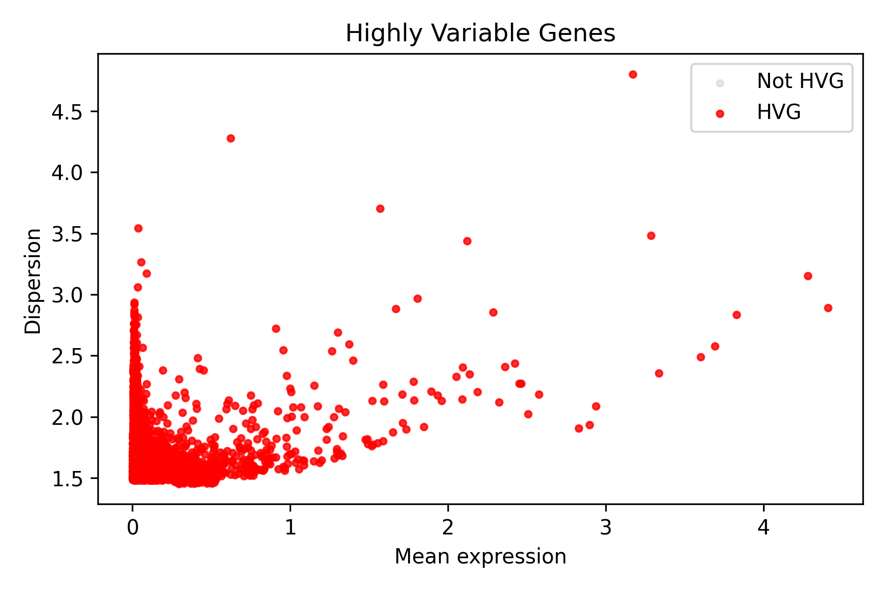
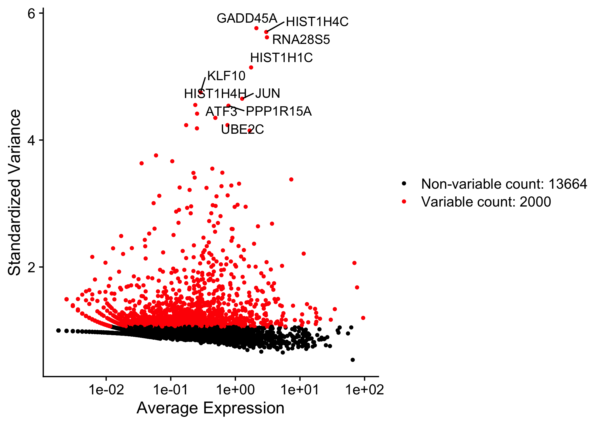
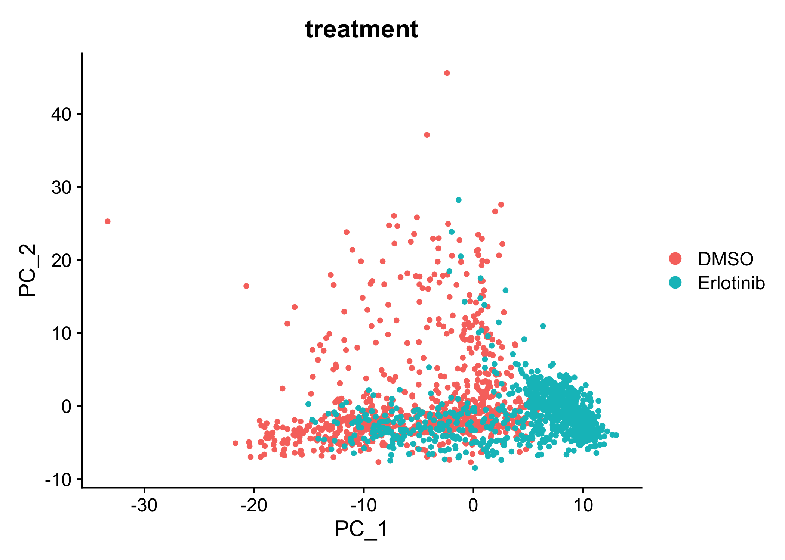
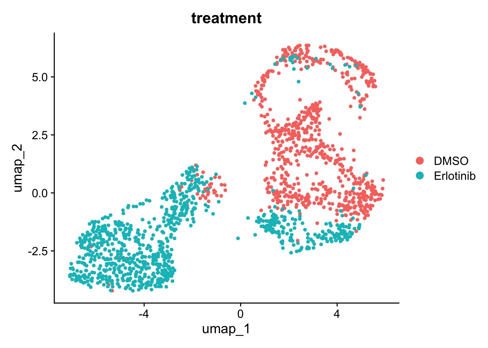
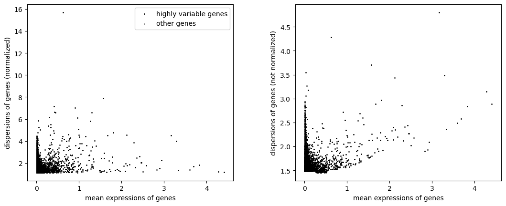
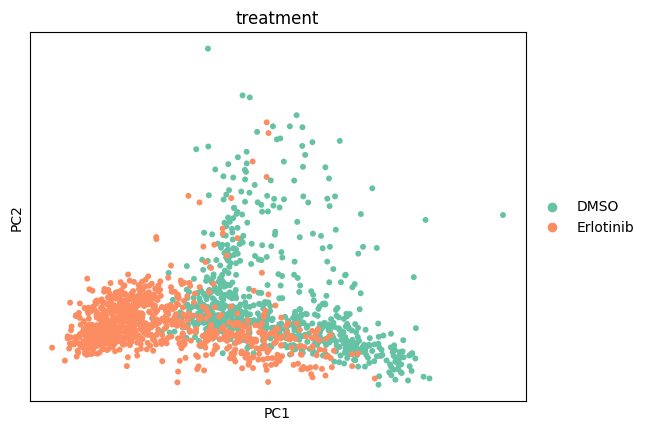
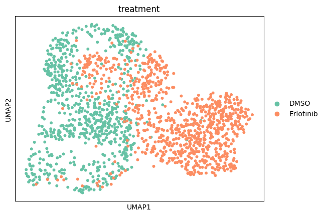

Step 4 Report: Normalization, HVG, PCA, UMAP
04_hvg_colored.png

04_hvg_plot.png

04_pca_treatment.png

04_umap_treatment.png

filter_genes_dispersion_04_hvg_plot.png

pca_04_pca_treatment.png

umap_04_umap_treatment.png
